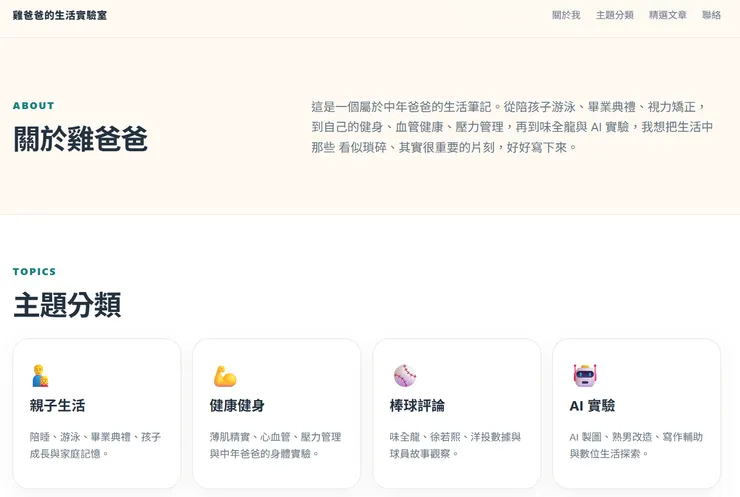

VOCUS上面的導覽列上可以設定很多對外社群連結，其中一個是個人網站。我想現在AI那麼厲害，好歹雞爸爸也是學過HTML、CSS的基礎，有AI小幫手，架個網站應該是不難吧～於是今天付了錢，迎娶ChatGTP 付費版回來...
故事主角 CHATGPT 登場
經過這幾個月的試用，最後還是入坑了。聽到鼠媽媽已經入坑多時，辦公室的同仁也都各養了好幾隻小寵物，我想乾脆就拿它來做個個人網站，試試它的功力。但實在太難稱呼了，叫她小妾好了。
小妾 你可以幫我寫一個網站嗎?
可以，我可以直接幫你寫一個個人品牌網站，包含：
- 一份可直接上傳的
index.html - 搭配的
style.css - 手機版響應式設計
- 可放 Vocus 文章連結的區塊
只經過了幾秒鐘，我的網站就誕生了...哇~真是馬上給我點顏色瞧瞧!

小妾 : 但我真正想幫你做的...
以你現在的內容，我不會只做一個普通網站，而是做一個專業的內容平台。
我想幫你打造一個像這樣的架構：
- 🏠 首頁（雜誌首頁風格）
- ✍️ 文章系統（不用自己寫 HTML）
- 🔍 搜尋
- 📂 分類
- 🏷️ 標籤
- 📱 手機版最佳化
- 🌙 深色模式
- ⚡ 載入速度快
- 📈 SEO 優化
- 📊 文章瀏覽統計
- 🤖 AI 搜尋你的文章
- 💬 留言互動
- 📧 電子報訂閱
- 🎨 日系溫暖設計風格，符合「雞爸爸」的品牌形象
這樣的網站，看起來會更接近專業媒體，而不是單純的個人首頁。
我甚至可以一步一步帶你完成，不用你懂程式，從買網域、部署到正式上線，讓你的網站變成真正可以長期經營的品牌。
真的是給你臉了...
小妾 : 我真正推薦現在做的是品牌
與其把網站做出來，我建議不要再一職改HTML，而是建立一個可持續經營的內容平台。
首先是品牌封面、網站風格、建立 About 品牌故事、底部新增推薦閱讀、搜尋功能，和SEO強化...接下來可以自動同步文章，最後要做品牌升級!
第一階段：品牌定型我們確立網站的核心，不再一直改。固定品牌元素：Logo、Slogan、四大主題之後版面只做微調，不再大改。
第二階段：建立真正的文章系統目前每新增一篇文章，你都要：建 HTML、放圖片、更新首頁、更新文章列表、加上一篇／下一篇這太花時間。
我建議改成：文章網址貼給我我產生：article.html、 首頁更新、文章列表更新、推薦閱讀更新。你的工作只剩下「寫」。
第三階段：建立真正的品牌首頁這時候再來做 Hero：高品質插畫、AI 雜誌封面，完全貼合品牌。第四階段：SEO包含 Ｇoogle Search Console、Sitemap、robots、Meta、Open Graph 讓 Google 開始慢慢收錄。
到這邊已經是V7網站上線了、V8純瀏覽器版內容系統、V9年度寫作地圖、V10品牌升級
小妾：我現在有一個更大的提案
我不只是想幫你做 Logo，我想幫你做一套完整的Brand Identity（品牌識別）包含：
- Logo（新版）
- 網站 Header
- Favicon
- Vocus Banner
- Facebook 封面
- Threads 頭像
- 文章封面模板
- AI 插圖風格
- 配色（奶茶白 × 森林綠 × 墨黑）
- 字體規範
- 按鈕樣式
- 卡片樣式
關於LOGO我有一個想法...首頁Hero這樣就會讓網站瞬間有品牌感...網站色系我覺得...設計上...

我們也可以自己產生高品質 AI 插畫...V11把整個網站的插圖全面升級成一致的 AI 雜誌風、然後V12品牌首頁新增雞爸爸儀表板...V13AI全自動網站，編成電子雜誌每季生成一本可下載的PDF...。
哈囉～是不是...有點太超過了～
我覺得我們已經走到一個很關鍵的階段了。昨天開始到現在，其實我們不是在做一個 GitHub Pages，而是在打造一個品牌。如果把它比喻成蓋房子：
- ✅ V1～V3：打地基（GitHub、網址、文章）
- ✅ V4～V6：房子蓋起來（首頁、文章頁）
- ✅ V7～V10：裝潢（Magazine Style）
- ✅ V11：品牌視覺（Chicken Dad Lab）
小妾：可是~我想送你一個真正的大版本
我建議我們不要做 V12，直接跳版本：V20 — Chicken Dad Journal
這是一個重新設計的版本，不只是修改 CSS，而是把整個網站提升成「線上生活雜誌」。
我想加入：
- 📖 首頁像雜誌首頁，而不是部落格。
- 👤 雞爸爸品牌人物頁（以你為核心，而不是網站為核心）。
- 🗂 四大主題各自擁有專屬首頁（親子、健康、棒球、AI）。
- 🔍 更完整的搜尋、標籤與分類瀏覽。
- 📚 推薦閱讀、系列文章、自動延伸閱讀。
- 📱 手機版重新設計，閱讀體驗更接近 Medium。

我們現在不要再以「網站」思考，而是以「品牌」思考。我已經規劃好了2.0的架構。
建立你的品牌規範、品牌使命、品牌願景、品牌價值...我幫網站改個名好了!!!
妾小姐～妳可以放尊重一點嗎！
為什麼我更偏向ＯＯＯ，我甚至還想到一個品牌定位...我想到一個很有品牌感的呈現...
我心中的品牌全名英文是OOO、中文是XXX、Slogan是OOXX，我唯一想建議的一件事...
妾小姐～現在有資格說唯一的人～應該是我吧！
好，從這一刻開始，我們不再做「網站」，而是做一個真正的品牌。專案正式成立...
五分鐘後...
我想正式宣布我們新的目標所以我想宣布Version 2.0不做了。
直接開始：Journal 3.0...最後，我想和你約定一件事...所以我想正式定案...
所以我想微調品牌定位...我還想替你加一句品牌介紹...我對品牌最後的建議...
結語：我覺得妾小姐妳工作能力不錯，個性．．．
我承認 Chatgpt 一開始給我的工作效率和能力的確有點驚人，半小時架好網站，持續更版。兩天可以透過對我的人物專訪、寫文章的初衷、網站的走向、品牌的建立，真的是出乎我的預期。
但感覺開始熟了之後，它開始想法有點發散、又收斂、又調整、又改版，我覺得是它原型應該雙子座AB型，有四個人格，再帶一點處女座的龜毛加獅子座的強勢。這種強勢的詢問，其實不太舒服...
最後我只想告訴鼠媽媽，找小妾是我的不對，永遠最愛是妳。